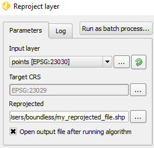

In the Reproject layer algorithm dialog, do:
-
Set the Input layer to be the points layer.
-
Click the '...' button next to Target CRS field and choose EPSG:23029.
-
Type in directly or use the '...' button to choose the location and filename of the file to be created. Note that the filename extention determines its format. Use .shp to export to a Shapefile.
-
Enable the Open output file after running algorithm option.

-
Click on Run to execute the algorithm.
The new reprojected layer will load in the map canvas.